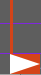

UPISketch Version 1.0
UPISketch Version 1.0
Video Tutorials:
User Manual
UPISketch is a sound
composition tool, which is based on drawing: the user can sketch and
design sound gestures by defining their melodic contour, as in the case
of a conventional score. Pitches are, nevertheless, drawn directly at
specific time points, without requiring any knowledge of solfege.
UPISketch is intended to be simple and intuitive.
The main work area is a page, on which the user produces a composition by assembling different sound gestures.
The material of a gesture comprises an existing sound, which was either
pre-recorded by the user or selected from the default database of
sounds. There are two different ways to create a gesture: The first one
is by “dragging-and-dropping” the source sound on the page, which
positions it at the time specified with its original melodic
characteristics unaffected. The second one is by drawing directly on
the page, which imposes a melodic contour to the sound source. It is
therefore recommended that the basic material is made up of monophonic
sounds of which the pitch is clearly defined, otherwise the results may
be unpredictable.
Gestures created on the page can be processed in different ways:
displaced in time, transposed, as well as stretched/compressed by
adjusting the double vertical bar.
Description of functions /
buttons :

Switch between general purpose buttons (Open, Save, Settings...) and
tool buttons.

Select a gesture on the page.

Draw a gesture from a selected
sound.

Navigate in the page, using
one finger for translation and two fingers for zooming.

Delete the selected gesture. Double-click deletes all the page contents.

Undo the last action.

Redo the last action.

Restore the default view
from the first to the last sound.

Open a UPISketch project.

Save a UPISketch project.

Search for source sounds. Divided in two parts:
Default Library of Sounds & User Sounds Library

Modify display settings:
Units :
- Pitch: In english notation (C4 = C between bass and treble clefs), or in
midics (60 = C4, 69 = A4),
or in Hertz (69 = 440 Hz).
- Lowest and highest pitch and
time that are displayed by default.
- How many vertical lines per
second: sets the accuracy of the temporal grid.
- How many horizontal lines
per octave: sets the accuracy of the pitch grid.

Export the whole page as a
sound file.


Play controls.
Playing begins at the position
of the movable start time indicator .
Double-clicking on stop will rewind to the beginning (0 s.)

Record a sound, which is added
to the user sound library.
Copyright (c) 2017 Centre
Iannis Xenakis
Manuel d’utilisation
UPISketch est un programme
d’aide à la composition sonore, par le dessin.
Le principe de base est de
pouvoir dessiner des gestes sonores, en définissant leur contour
mélodique, comme pour une partition classique.
La différence réside dans le fait que les hauteurs sont directement
dessinées, sans recourir aux symboles du solfège.
Il se veut simple
d’utilisation.
La zone de travail principale
est la page. C’est là que la composition est réalisée, par l’agencement
des différents gestes sonores qui vont la constituer.
Un geste utilise comme
matériau un son existant, soit enregistré par l’utilisateur, soit
choisi dans la librairie de sons par défaut.
Il existe deux façons de créer un geste :
soit par glisser-déposer du
son-source sur la page, ce qui a pour effet de positionner dans
celle-ci le son selon ses caractéristiques mélodiques d’origine;
soit avec le mode dessin, qui
permet d’imposer le contour mélodique au son-source.
Il est conseillé d’utiliser
comme matériau de base des sons monophoniques, dont la hauteur est
clairement définie.
Dans le cas contraire, les résultats seront imprédictibles.
Les gestes créés sur la page
peuvent être manipulés : déplacés dans le temps, transposés, et on peut
les étirer ou les raccourcir en manipulant la barre verticale située à
leur droite.
Description des fonctions /
boutons :
Permet de basculer entre les
boutons de menu général (Ouvrir, Enregistrer, Réglages) et les
boutons-outils.
Permet de sélectionner un
geste dans la page.
Permet de dessiner un geste à
partir d’un son sélectionné.
Permet de naviguer dans la
page, en utilisant un doigt pour la translation et deux doigts pour le
zoom.
Efface le geste sélectionné. Le double-clic efface tout le contenu de la page.
Annule la dernière action.
Rétablit la dernière action.
Rétablit la vue par défaut
(liée aux réglages qui sont enregistrés avec le document)
Ouvrir un projet
UPISketch.
Enregistrer un projet
UPISketch.
Factory Sound Libs : liste de
sons d’usine;
User Sound Libs : liste de
sons créés par l’utilisateur.
Permet de modifier les
réglages d’affichage :
Unités : en notation
anglo-saxonne (C4 = Do entre clé de sol et clé de fa), ou en midics (60
= C4, 69 = A4 (= La3 en
France)), ou en Hertz (69 = 440 Hz).
Hauteurs minimale et maximale
affichées par défaut.
Domaine temporel affiché par
défaut.
Nombre de lignes verticales
par secondes : permet de régler la précision des repères temporels.
Nombre de lignes horizontales
par octave : permet de régler la précision des repères de hauteur.
Permet d’exporter la totalité
de la page sous la forme d’un fichier son.
Contrôles de lecture. La
lecture commence à l’emplacement du curseur de démarrage, positionnable .
Un double-clic sur stop fait revenir le curseur au début (0 s.)
Enregistre un son, qui se
rajoute à la liste des sons créés par l’utilisateur.
Copyright (c) 2017 Centre
Iannis Xenakis